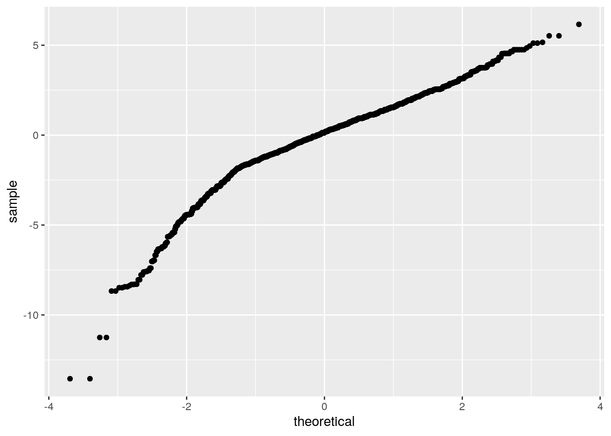

December 2, 2020
R Markdown
This is an R Markdown document. Markdown is a simple formatting syntax for authoring HTML, PDF, and MS Word documents. For more details on using R Markdown see http://rmarkdown.rstudio.com.
When you click the Knit button a document will be generated that includes both content as well as the output of any embedded R code chunks within the document. You can embed an R code chunk like this:
0.Introduction and Data Input: Trump approval Polls
With our current political climate the dispute of who will become preseident, I wanted to find out how our current president, Donald Trump's approval has been and possible how it affected the 2020 elections, and if these ratings helped predict Joe Biden as the new presindent (Although not fully confirmed yet). My data set includes the pollsters, the grade (weight) of the pollsters, the sample size, and the approval and disapproval rating as well as tracking and multiversion which are the types of surveys. The dataset also includes adjusted ratings, but I could not find information about how they are adjusted, so I will use the normal approvl rating percentage. The are very similar so the results should be similar either way. There are 4,929 observations in this dataset. I will focus on the approve and disapprove variables which are dependent and my grade/weight variables which are the independent variables.
library(fivethirtyeight)
trump <- trump_approval_poll
head(trump)## subgroup start_date end_date pollster
## 1 All polls 2017-01-20 2017-01-22 Morning Consult
## 2 All polls 2017-01-20 2017-01-22 Gallup
## 3 All polls 2017-01-21 2017-01-23 Gallup
## 4 All polls 2017-01-20 2017-01-24 Ipsos
## 5 All polls 2017-01-22 2017-01-24 Rasmussen Reports/Pulse Opinion Research
## 6 All polls 2017-01-21 2017-01-25 Ipsos
## grade sample_size population weight approve disapprove adjusted_approve
## 1 B- 1992 rv 0.9464371 46.0 37.0 42.67793
## 2 B 1500 a 0.2454292 45.0 45.0 46.12215
## 3 B 1500 a 0.2267880 45.0 46.0 46.12215
## 4 B+ 1632 a 0.2244560 42.1 45.2 42.42070
## 5 C+ 1500 lv 0.2203903 57.0 43.0 51.79590
## 6 B+ 1651 a 0.2099484 42.3 45.8 42.62070
## adjusted_disapprove multiversions tracking
## 1 39.42662 FALSE FALSE
## 2 43.05047 FALSE TRUE
## 3 44.05047 FALSE TRUE
## 4 43.89911 FALSE TRUE
## 5 43.44841 FALSE TRUE
## 6 44.49911 FALSE TRUE
## url
## 1 http://www.politico.com/story/2017/01/poll-voters-liked-trumps-inaugural-address-234148
## 2 http://www.gallup.com/poll/201617/gallup-daily-trump-job-approval.aspx
## 3 http://www.gallup.com/poll/201617/gallup-daily-trump-job-approval.aspx
## 4 http://polling.reuters.com/#poll/CP3_2/
## 5 http://www.rasmussenreports.com/public_content/politics/trump_administration/trump_approval_index_history
## 6 http://polling.reuters.com/#poll/CP3_2/
## poll_id question_id created_date timestamp
## 1 49249 77261 2017-01-23 2018-08-13 14:06:42
## 2 49253 77265 2017-01-23 2018-08-13 14:06:42
## 3 49262 77274 2017-01-24 2018-08-13 14:06:42
## 4 49426 77599 2017-03-01 2018-08-13 14:06:42
## 5 49266 77278 2017-01-25 2018-08-13 14:06:42
## 6 49425 77598 2017-03-01 2018-08-13 14:06:421. MANOVA Testing
library(dplyr)##
## Attaching package: 'dplyr'## The following objects are masked from 'package:stats':
##
## filter, lag## The following objects are masked from 'package:base':
##
## intersect, setdiff, setequal, unionlibrary(tidyverse)## ── Attaching packages ───────────────────────────────────────────────────────── tidyverse 1.3.0 ──## ✓ ggplot2 3.3.2 ✓ purrr 0.3.4
## ✓ tibble 3.0.3 ✓ stringr 1.4.0
## ✓ tidyr 1.1.1 ✓ forcats 0.5.0
## ✓ readr 1.3.1## ── Conflicts ──────────────────────────────────────────────────────────── tidyverse_conflicts() ──
## x dplyr::filter() masks stats::filter()
## x dplyr::lag() masks stats::lag()library(rstatix)##
## Attaching package: 'rstatix'## The following object is masked from 'package:stats':
##
## filtergroup <- trump$grade #grade is independent
DVs <- trump %>% select(approve, disapprove) #approve and disapprove are dependent on grade (weight) of pollsters
sapply(split(DVs,group), mshapiro_test) #all p-values are less than 0.05 and thus significant and all ssumptions met so, I will contnie with MANOVA testing ## C- C C+ B- B
## statistic 0.913848 0.851116 0.8976587 0.930745 0.8952132
## p.value 0.004958745 0.0006543618 1.029048e-23 1.851846e-09 2.216067e-28
## B+ A- A A+
## statistic 0.9653398 0.8134553 0.9706647 0.9148765
## p.value 7.998741e-20 9.826336e-15 0.04738845 0.001081716man1<-manova(cbind(approve, disapprove )~grade, data=trump)
summary(man1)## Df Pillai approx F num Df den Df Pr(>F)
## grade 8 0.61377 248.56 16 8982 < 2.2e-16 ***
## Residuals 4491
## ---
## Signif. codes: 0 '***' 0.001 '**' 0.01 '*' 0.05 '.' 0.1 ' ' 1summary.aov(man1)## Response approve :
## Df Sum Sq Mean Sq F value Pr(>F)
## grade 8 23363 2920.44 261.41 < 2.2e-16 ***
## Residuals 4491 50172 11.17
## ---
## Signif. codes: 0 '***' 0.001 '**' 0.01 '*' 0.05 '.' 0.1 ' ' 1
##
## Response disapprove :
## Df Sum Sq Mean Sq F value Pr(>F)
## grade 8 4058 507.22 40.861 < 2.2e-16 ***
## Residuals 4491 55748 12.41
## ---
## Signif. codes: 0 '***' 0.001 '**' 0.01 '*' 0.05 '.' 0.1 ' ' 1
##
## 429 observations deleted due to missingnesstrump%>%group_by(grade)%>%summarise(mean(approve),mean(disapprove))## `summarise()` ungrouping output (override with `.groups` argument)## # A tibble: 10 x 3
## grade `mean(approve)` `mean(disapprove)`
## <ord> <dbl> <dbl>
## 1 C- 46.2 50.9
## 2 C 43.1 51.2
## 3 C+ 45.5 53.3
## 4 B- 42.2 51.5
## 5 B 39.5 53.9
## 6 B+ 40.7 54.8
## 7 A- 38.5 55.1
## 8 A 40.4 52.3
## 9 A+ 39.9 53.1
## 10 <NA> 41.4 56.6pairwise.t.test(trump$approve, trump$grade, p.adj = "none") #post-hoc test with bonferroni correction##
## Pairwise comparisons using t tests with pooled SD
##
## data: trump$approve and trump$grade
##
## C- C C+ B- B B+ A- A
## C 8.6e-05 - - - - - - -
## C+ 0.19704 6.7e-05 - - - - - -
## B- 1.8e-12 0.18950 < 2e-16 - - - - -
## B < 2e-16 1.1e-08 < 2e-16 < 2e-16 - - - -
## B+ < 2e-16 0.00013 < 2e-16 2.5e-11 < 2e-16 - - -
## A- < 2e-16 2.5e-12 < 2e-16 < 2e-16 3.3e-05 < 2e-16 - -
## A < 2e-16 0.00019 < 2e-16 1.7e-05 0.01691 0.43291 6.3e-06 -
## A+ < 2e-16 2.9e-05 < 2e-16 3.4e-06 0.46879 0.07150 0.00681 0.34550
##
## P value adjustment method: nonepairwise.t.test(trump$disapprove, trump$grade, p.adj = "none")#post-hoc test with bonferroni correction##
## Pairwise comparisons using t tests with pooled SD
##
## data: trump$disapprove and trump$grade
##
## C- C C+ B- B B+ A- A
## C 0.69528 - - - - - - -
## C+ 1.8e-05 0.00124 - - - - - -
## B- 0.25185 0.60293 3.5e-12 - - - - -
## B 7.4e-08 3.1e-05 0.00010 < 2e-16 - - - -
## B+ 5.1e-12 4.1e-08 < 2e-16 < 2e-16 9.6e-11 - - -
## A- 6.7e-12 2.2e-08 2.4e-10 < 2e-16 1.8e-05 0.25460 - -
## A 0.02979 0.12970 0.01376 0.07718 5.6e-05 4.4e-10 1.9e-09 -
## A+ 0.00248 0.01824 0.67000 0.00370 0.09891 0.00071 0.00031 0.21156
##
## P value adjustment method: noneGrade (weight) is my indendept variable, and approve and disapprove are my dependent variables. I started off doing a MANOVA which in turn showed a mean difference shown when I ran the code, so I went on to do univariate ANOVA tests and found mean differences between the approve and grade variables with a bonferroni correction to adjust the sit 2.2e-16. For MANOVA, the assumptions are random and independent observations, multivariate dependent varibales, homogeneity, a linear relatioship between dependent variables, not extreme ouliers, and no multicollinearity. I believe my data does meet these standards.
2. Randomization Test
fit<-lm(approve ~ grade + disapprove, data=trump)
summary(fit)##
## Call:
## lm(formula = approve ~ grade + disapprove, data = trump)
##
## Residuals:
## Min 1Q Median 3Q Max
## -13.5474 -0.9446 0.1515 1.1318 6.1606
##
## Coefficients:
## Estimate Std. Error t value Pr(>|t|)
## (Intercept) 83.796540 0.414560 202.134 < 2e-16 ***
## grade.L -4.383713 0.252222 -17.380 < 2e-16 ***
## grade.Q 0.570774 0.216482 2.637 0.00840 **
## grade.C 0.392675 0.203128 1.933 0.05328 .
## grade^4 -0.017838 0.223042 -0.080 0.93626
## grade^5 -0.578248 0.217573 -2.658 0.00789 **
## grade^6 2.696159 0.169760 15.882 < 2e-16 ***
## grade^7 -3.010942 0.121219 -24.839 < 2e-16 ***
## grade^8 -0.023793 0.082606 -0.288 0.77333
## disapprove -0.794247 0.007742 -102.584 < 2e-16 ***
## ---
## Signif. codes: 0 '***' 0.001 '**' 0.01 '*' 0.05 '.' 0.1 ' ' 1
##
## Residual standard error: 1.828 on 4490 degrees of freedom
## (429 observations deleted due to missingness)
## Multiple R-squared: 0.796, Adjusted R-squared: 0.7955
## F-statistic: 1946 on 9 and 4490 DF, p-value: < 2.2e-16fit2<-lm(disapprove ~ grade + approve, data=trump)
summary(fit2) #These were F statistic but I need mean difference because I am comparing categorical (grade) with numeric varibles (approve or disapprove)##
## Call:
## lm(formula = disapprove ~ grade + approve, data = trump)
##
## Residuals:
## Min 1Q Median 3Q Max
## -17.6110 -0.8128 0.2715 1.2524 5.9639
##
## Coefficients:
## Estimate Std. Error t value Pr(>|t|)
## (Intercept) 89.770856 0.365810 245.403 < 2e-16 ***
## grade.L -3.133066 0.270657 -11.576 < 2e-16 ***
## grade.Q -0.160887 0.228359 -0.705 0.481135
## grade.C 0.077069 0.214204 0.360 0.719018
## grade^4 0.095030 0.235105 0.404 0.686082
## grade^5 -0.062281 0.229522 -0.271 0.786133
## grade^6 2.837605 0.178960 15.856 < 2e-16 ***
## grade^7 -2.912344 0.129157 -22.549 < 2e-16 ***
## grade^8 0.323139 0.086942 3.717 0.000204 ***
## approve -0.882515 0.008603 -102.584 < 2e-16 ***
## ---
## Signif. codes: 0 '***' 0.001 '**' 0.01 '*' 0.05 '.' 0.1 ' ' 1
##
## Residual standard error: 1.927 on 4490 degrees of freedom
## (429 observations deleted due to missingness)
## Multiple R-squared: 0.7212, Adjusted R-squared: 0.7207
## F-statistic: 1291 on 9 and 4490 DF, p-value: < 2.2e-16#Mean difference randomization Test
approve1 <- trump$approve
disapprove1 <- trump$disapprove
trump_random<-data.frame(condition=c(rep("approve1"),rep("disapprove1")),grade=c(approve1, disapprove1))
head(trump_random)## condition grade
## 1 approve1 46.0
## 2 disapprove1 45.0
## 3 approve1 45.0
## 4 disapprove1 42.1
## 5 approve1 57.0
## 6 disapprove1 42.3head(trump_random) ## condition grade
## 1 approve1 46.0
## 2 disapprove1 45.0
## 3 approve1 45.0
## 4 disapprove1 42.1
## 5 approve1 57.0
## 6 disapprove1 42.3trump_random%>%group_by(condition)%>%
summarize(means=mean(grade))%>%summarize(`mean_diff`=diff(means))## `summarise()` ungrouping output (override with `.groups` argument)## # A tibble: 1 x 1
## mean_diff
## <dbl>
## 1 -0.0469head(perm1<-data.frame(condition=trump_random$condition,grade=sample(trump_random$grade)))## condition grade
## 1 approve1 59.8
## 2 disapprove1 40.7
## 3 approve1 37.0
## 4 disapprove1 40.2
## 5 approve1 40.0
## 6 disapprove1 55.0perm1%>%group_by(condition)%>%
summarize(means=mean(grade))%>%summarize(`mean_diff`=diff(means))## `summarise()` ungrouping output (override with `.groups` argument)## # A tibble: 1 x 1
## mean_diff
## <dbl>
## 1 -0.272head(perm2<-data.frame(condition=trump_random$condition,grade=sample(trump_random$grade))) ## condition grade
## 1 approve1 55.50
## 2 disapprove1 36.90
## 3 approve1 47.50
## 4 disapprove1 53.38
## 5 approve1 52.00
## 6 disapprove1 39.60perm2%>%group_by(condition)%>%
summarize(means=mean(grade))%>%summarize(`mean_diff:`=diff(means))## `summarise()` ungrouping output (override with `.groups` argument)## # A tibble: 1 x 1
## `mean_diff:`
## <dbl>
## 1 -0.0768head(perm3<-data.frame(condition=trump_random$condition,grade=sample(trump_random$grade))) ## condition grade
## 1 approve1 46
## 2 disapprove1 57
## 3 approve1 56
## 4 disapprove1 39
## 5 approve1 52
## 6 disapprove1 55perm3%>%group_by(condition)%>%
summarize(means=mean(grade))%>%summarize(`mean_diff:`=diff(means))## `summarise()` ungrouping output (override with `.groups` argument)## # A tibble: 1 x 1
## `mean_diff:`
## <dbl>
## 1 -0.0918rand_dist<-vector() #create vector to hold diffs under null hypothesis
for(i in 1:200){
new<-data.frame(grade=sample(trump_random$grade),condition=trump_random$condition) #scramble columns
rand_dist[i]<-mean(new[new$condition=="approve1",]$grade)-
mean(new[new$condition=="disapprove1",]$grade)} #compute mean difference (base R)
rand_dist[i] #mean difference 0.1054575## [1] -0.1495354{hist(rand_dist,main="Grade vs Approve.Disapprove",ylab="Approval"); abline(v = c(-20, 20),col="red")}#I started using an F-statistic but realized that was not the best test to run, so I used a mean difference test because I wanted to know if there was an association between the grade of the pollster (categorical) with the approval and disaproval rating of President Trump. I recieved a mean difference of 0.04693447 which is very small difference so, there is not a stong association between approve and grade. After scrambling 200 times (when I did it 5000 times Rstudio crashed because my dataset has too many observations), I got a mean difference of 0.0739744,which is a bit higher but still not indicating a strong correlation between pollster and approval. The mean difference changed everytime I ran it but all values were low. My Null hypothesis for this was grade of pollster does not have an affect on approval rate of Pres. Donald Trump and my Alternative hypothesis was that the grade of the pollster does have a significant affect on the approval rate of Donald Trump. After getting such low mean differnce values which means low association between pollster grade and approval. Thus, we fail to reject the null hypothesis. I created a plot visualizing the null distribution and it was normal with a slight outlier basrely skewing it left.
3. Linear Regression Model.
#For my resppnse variable, I will use approval with grade (weight) and sample size (Independent variables)
x<- scale(trump$approve)
y <- scale(trump$weight)
y2 <- scale(trump$sample_size)
sum(x*y)/sum(x^2) #-0.1453468 ## [1] -0.1453468sum(x*y2)/sum(x^2) #0.08588308## [1] 0.08588308lm(y~x)##
## Call:
## lm(formula = y ~ x)
##
## Coefficients:
## (Intercept) x
## 1.457e-16 -1.453e-01lm(y2~x)##
## Call:
## lm(formula = y2 ~ x)
##
## Coefficients:
## (Intercept) x
## 1.728e-17 8.588e-02cor(trump$sample_size, trump$approve) #cor 0.08588308 not much correlation between sample size and approval## [1] 0.08588308cor(trump$weight, trump$approve) #cor -0.1453468 for grade (weight) and approval## [1] -0.1453468fit1<- lm(sample_size ~approve, data=trump)
coef(fit1)## (Intercept) approve
## -624.46560 66.16692fit2 <- lm(weight~approve, data=trump)
coef(fit2)## (Intercept) approve
## 1.13559926 -0.01729675lm(trump$approve ~ x*y) #This is for both together. ##
## Call:
## lm(formula = trump$approve ~ x * y)
##
## Coefficients:
## (Intercept) x y x:y
## 4.136e+01 4.077e+00 7.380e-15 8.608e-15#Regression Plot ggplot
library(interactions)
trump%>%ggplot(aes(approve, weight))+geom_point()+geom_smooth(method= 'lm', se=F) #Plotted 2 for convenience like suggested in the instructions## `geom_smooth()` using formula 'y ~ x'#Checking Assumptions
#Checking linearity and homoskedsaticity
resids<- lm(y~x, data=trump)$residuals
resids <-fit$residuals
ggplot()+geom_histogram(aes(resids), bins=100) #Normal Distribution, meets assumptions
fitted<-lm(y~x, data=trump)$fitted.values
resids<-fit$residuals
fitvals<-fit$fitted.values
ggplot()+geom_point(aes(fitvals,resids))+geom_hline(yintercept=0, color='red')# looks good, meets linearity and homoskesaticityggplot()+geom_histogram(aes(resids), bins=100) #Normality is relatively okay. slightly skewed left with some outliers less than -10.ggplot()+geom_qq(aes(sample=resids))+geom_qq_line() #Relatively normal (linear)
#homoskadicity and normality are okay
#Robust Standard Errors
library(sandwich)
library(lmtest)## Loading required package: zoo##
## Attaching package: 'zoo'## The following objects are masked from 'package:base':
##
## as.Date, as.Date.numericfit2<- lm(weight~approve, data=trump)
fit2##
## Call:
## lm(formula = weight ~ approve, data = trump)
##
## Coefficients:
## (Intercept) approve
## 1.1356 -0.0173summary(fit2)$coef[,1:2] #uncorrected SE## Estimate Std. Error
## (Intercept) 1.13559926 0.069707885
## approve -0.01729675 0.001677378coeftest(fit, vcov = vcovHC(fit))[,1:2] #corrected SE## Estimate Std. Error
## (Intercept) 83.79653986 0.62573146
## grade.L -4.38371273 0.33979365
## grade.Q 0.57077359 0.23467721
## grade.C 0.39267465 0.24536828
## grade^4 -0.01783790 0.35677936
## grade^5 -0.57824807 0.37712734
## grade^6 2.69615917 0.28471673
## grade^7 -3.01094189 0.18988462
## grade^8 -0.02379344 0.12578179
## disapprove -0.79424678 0.01155083#Proportion of Variation
summary(fit)##
## Call:
## lm(formula = approve ~ grade + disapprove, data = trump)
##
## Residuals:
## Min 1Q Median 3Q Max
## -13.5474 -0.9446 0.1515 1.1318 6.1606
##
## Coefficients:
## Estimate Std. Error t value Pr(>|t|)
## (Intercept) 83.796540 0.414560 202.134 < 2e-16 ***
## grade.L -4.383713 0.252222 -17.380 < 2e-16 ***
## grade.Q 0.570774 0.216482 2.637 0.00840 **
## grade.C 0.392675 0.203128 1.933 0.05328 .
## grade^4 -0.017838 0.223042 -0.080 0.93626
## grade^5 -0.578248 0.217573 -2.658 0.00789 **
## grade^6 2.696159 0.169760 15.882 < 2e-16 ***
## grade^7 -3.010942 0.121219 -24.839 < 2e-16 ***
## grade^8 -0.023793 0.082606 -0.288 0.77333
## disapprove -0.794247 0.007742 -102.584 < 2e-16 ***
## ---
## Signif. codes: 0 '***' 0.001 '**' 0.01 '*' 0.05 '.' 0.1 ' ' 1
##
## Residual standard error: 1.828 on 4490 degrees of freedom
## (429 observations deleted due to missingness)
## Multiple R-squared: 0.796, Adjusted R-squared: 0.7955
## F-statistic: 1946 on 9 and 4490 DF, p-value: < 2.2e-16(sum((trump$approve-mean(trump$approve))^2)-sum(fit$residuals^2))/sum((trump$approve-mean(trump$approve))^2)## [1] 0.8167865#My model explains 0.8167865 or about 81.68% of the variance.The coefficient estimate values show how much the mean of the dependent variable which is approval in my case, changes with one unit shift of the indepedent variable which is approval in mu case. For mine, theyare all non-zero coefficients that are not very high for some and thus not much change in correlation with each other and others do suggest correlation between variables indicated by their p-values. I will discuss significane of it later as suggested in the instructions. I plotted the regression plot and there seems to be a slight negative correlation between approve and weight. I used weight here, but it is just the numeric value of grade. The higher the grade, the higher the weight. Like the instructions said, I just plotted two of the varibales for convenience. I then checked Linearity and homoskedascity and linearity with my histogram, regression, and a graph for homoskedascity, and it met these assumptions by the graph showing a relatively normal distribution and linearity and homoskedacity with the other 2 graphs. I did all these graphically instead of using a hypothesis test. I then corrected my standard error and and found the proportion of variance that my model explaines is 0.8167865 or 81.67865% which is pretty good.
4 Regression with Interaction and Bootsrtap SE
fit3<-lm(weight ~ approve + sample_size, data=trump)# sample_size and approve interaction.
summary(fit3) #approve = 1.671e-02##
## Call:
## lm(formula = weight ~ approve + sample_size, data = trump)
##
## Residuals:
## Min 1Q Median 3Q Max
## -0.4613 -0.3006 -0.2167 0.1128 2.4202
##
## Coefficients:
## Estimate Std. Error t value Pr(>|t|)
## (Intercept) 1.130e+00 6.961e-02 16.234 < 2e-16 ***
## approve -1.671e-02 1.681e-03 -9.941 < 2e-16 ***
## sample_size -8.863e-06 2.182e-06 -4.062 4.94e-05 ***
## ---
## Signif. codes: 0 '***' 0.001 '**' 0.01 '*' 0.05 '.' 0.1 ' ' 1
##
## Residual standard error: 0.4793 on 4926 degrees of freedom
## Multiple R-squared: 0.02439, Adjusted R-squared: 0.024
## F-statistic: 61.58 on 2 and 4926 DF, p-value: < 2.2e-16#Bootstrapping Residuals
fit4 <- lm(weight~approve, data=trump)
resids<- fit4$residuals
fitted <- fit4$fitted.values
fit4 #approve = -0.0173##
## Call:
## lm(formula = weight ~ approve, data = trump)
##
## Coefficients:
## (Intercept) approve
## 1.1356 -0.0173resid_resamp<-replicate(400,{
new_resids<-sample(resids,replace=TRUE)
newdat<-trump
newdat$weight<-fitted+new_resids
fit5<-lm(weight ~ approve, data = trump)
coef(fit5) #Itercept = 1.13559926 approve =-0.01729675
})
resid_resamp%>%t%>%as.data.frame%>%summarize_all(sd)## (Intercept) approve
## 1 0 0resid_resamp%>%t%>%as.data.frame%>%gather%>%group_by(key)%>%
summarize(lower=quantile(value,.025), upper=quantile(value,.975))## `summarise()` ungrouping output (override with `.groups` argument)## # A tibble: 2 x 3
## key lower upper
## <chr> <dbl> <dbl>
## 1 (Intercept) 1.14 1.14
## 2 approve -0.0173 -0.0173Here I ran the same regression model but with interaction of weight (numeric version of grade), approval, and sample size. Both sample size and approval actually had significant correlation (as seen by p<0.05) with the grade of the pollster whihc I though was quite interesting becuase I was not expecting to find any correlation between the grade of the poll site and the sample size. Both were a neagtive correlation however. Compared with my robust SEs, my bootstrapped SEs, were bascially the same, with them being -0.1729675 for the bootstrapped SE and -0.173 so that is probably the difference in rounding. The normal standard error is 0.01671 which is slightly different. With the p-values being significant (p<0.05) for both approval rate with weight, and sample size with wight indication relationship and correlation same with original SE.
5. Logistic Regression
library(tidyverse)
library(lmtest)
library(plotROC)
data4<-trump%>%mutate(y=ifelse(tracking=="TRUE",1,0)) #Tracking (Binary)
data4$tracking<-factor(data4$tracking,levels=c("TRUE","FALSE"))
head(data4)## # A tibble: 6 x 20
## subgroup start_date end_date pollster grade sample_size population weight
## <fct> <date> <date> <fct> <ord> <int> <fct> <dbl>
## 1 All pol… 2017-01-20 2017-01-22 Morning… B- 1992 rv 0.946
## 2 All pol… 2017-01-20 2017-01-22 Gallup B 1500 a 0.245
## 3 All pol… 2017-01-21 2017-01-23 Gallup B 1500 a 0.227
## 4 All pol… 2017-01-20 2017-01-24 Ipsos B+ 1632 a 0.224
## 5 All pol… 2017-01-22 2017-01-24 Rasmuss… C+ 1500 lv 0.220
## 6 All pol… 2017-01-21 2017-01-25 Ipsos B+ 1651 a 0.210
## # … with 12 more variables: approve <dbl>, disapprove <dbl>,
## # adjusted_approve <dbl>, adjusted_disapprove <dbl>, multiversions <lgl>,
## # tracking <fct>, url <fct>, poll_id <int>, question_id <int>,
## # created_date <date>, timestamp <dttm>, y <dbl>data5<-trump%>%mutate(y=ifelse(multiversions=="TRUE",1,0)) #Multiversion (Binary)
data5$multiversions<-factor(data4$multiversions,levels=c("TRUE","FALSE"))
head(data5)## # A tibble: 6 x 20
## subgroup start_date end_date pollster grade sample_size population weight
## <fct> <date> <date> <fct> <ord> <int> <fct> <dbl>
## 1 All pol… 2017-01-20 2017-01-22 Morning… B- 1992 rv 0.946
## 2 All pol… 2017-01-20 2017-01-22 Gallup B 1500 a 0.245
## 3 All pol… 2017-01-21 2017-01-23 Gallup B 1500 a 0.227
## 4 All pol… 2017-01-20 2017-01-24 Ipsos B+ 1632 a 0.224
## 5 All pol… 2017-01-22 2017-01-24 Rasmuss… C+ 1500 lv 0.220
## 6 All pol… 2017-01-21 2017-01-25 Ipsos B+ 1651 a 0.210
## # … with 12 more variables: approve <dbl>, disapprove <dbl>,
## # adjusted_approve <dbl>, adjusted_disapprove <dbl>, multiversions <fct>,
## # tracking <lgl>, url <fct>, poll_id <int>, question_id <int>,
## # created_date <date>, timestamp <dttm>, y <dbl>fit8<-glm(y~ approve+weight, data=data4, family="binomial")## Warning: glm.fit: fitted probabilities numerically 0 or 1 occurredcoeftest(fit8) #Coefficients here##
## z test of coefficients:
##
## Estimate Std. Error z value Pr(>|z|)
## (Intercept) 6.381672 0.567814 11.2390 < 2.2e-16 ***
## approve -0.034289 0.013042 -2.6292 0.008559 **
## weight -16.932428 0.790079 -21.4313 < 2.2e-16 ***
## ---
## Signif. codes: 0 '***' 0.001 '**' 0.01 '*' 0.05 '.' 0.1 ' ' 1#Confusion Matrix
probs<-predict(fit8,type="response")
table(predict=as.numeric(probs>.5),truth=data4$y)%>%addmargins## truth
## predict 0 1 Sum
## 0 1361 34 1395
## 1 418 3116 3534
## Sum 1779 3150 49293116/(3116+34) #Sensitivity= 0.9892063 (TPR)## [1] 0.9892063TPR <-0.9892063
1361/1779 #Sepcificity = 0.7650365 (TNR)## [1] 0.7650365TNR <- 0.7650365
3116/3534 #Precision (PPV)= 0.8817204## [1] 0.8817204PPV <-0.8817204
library(plotROC)
ROCplot<-ggplot(data4)+geom_roc(aes(d=multiversions,m=weight), n.cuts=0)
ROCplot## Warning in verify_d(data$d): D not labeled 0/1, assuming FALSE = 0 and TRUE = 1!calc_auc(ROCplot) #AUC = 0.7227052 Fair## Warning in verify_d(data$d): D not labeled 0/1, assuming FALSE = 0 and TRUE = 1!## PANEL group AUC
## 1 1 -1 0.7227052#GGplot density plot
data4$prob <-predict(fit8, type= "response")
data4$am <- as.factor(data4$y)
ggplot(data4, aes(approve,weight))+geom_jitter(aes(color=am),alpha=.5,size=3)+
geom_rug(aes(color=am),sides="right")+geom_hline(yintercept=.5)data4$logit<-predict(fit8,type="link")
data4%>%ggplot(aes(logit,color=am,fill=am))+geom_density(alpha=.4)+
theme(legend.position=c(.85,.85))+geom_vline(xintercept=0)+xlab("predictor (logit)")#ROC Curve Plot and calcuate AUC:
sens<-function(p,data=data4, y=y) mean(data[data4$y==1,]$prob>p)
spec<-function(p,data=data4, y=y) mean(data[data4$y==0,]$prob<p)
sensitivity<-sapply(seq(0,1,.01),sens,data4)
specificity<-sapply(seq(0,1,.01),spec,data4)
ROC1<-data.frame(sensitivity,specificity,cutoff=seq(0,1,.01))
ROC1%>%gather(key,rate,-cutoff)%>%ggplot(aes(cutoff,rate,color=key))+geom_path()+
geom_vline(xintercept=c(.1,.5,.9),lty=5,color=c("darkgreen","black","purple"))ROC1$TPR<-sensitivity
ROC1$FPR<-1-specificity
ROC1%>%ggplot(aes(FPR,TPR))+geom_path(size=1.5)+geom_segment(aes(x=0,y=0,xend=1,yend=1))widths<-diff(ROC1$FPR)
heights<-vector()
for(i in 1:100) heights[i]<-ROC1$TPR[i]+ROC1$TPR[i+1]
AUC<-sum(heights*widths/2)
AUC%>%round(8) #AOC= -0.9492794 I assume it should be positive## [1] -0.9492794Here, I started with the fitting a logistic regression predicting a binary variable, in which I used my tracking variable which is TRUE when the pollster tracks and polls daily and false when the pollsters do not track daily. My other binary variable that I ran a regression on was "multiversions" which were multiple versions of the poll geared either to adult voters or newer younger voters. My coefficient estimates with tracking and weight with approval were -0.034289 with approval and tracking & weight and tracking was 16.932428 . for approval, for every tracking "yes" there is less of possibility of approval by 0.034289. With weight, when tracking is true (1) the grade (weight) of the pollster goes down 16.932%. After I made the confusion matrix, I got Sensitivity= 0.9892063 which is the probability of approval when the polling tracks (TPR), Sepcificity = 0.7650365 (TNR), which is the probablity of tracking when the outlook was positive and Precision (PPV)= 0.8817204 which is the proportion of true for tracking when it is actually true. The AUC is how well weare predicting approval with tracking overall. For this, it was 0.7227052 which is classified as Fair. I made a density plot of log odds grouped with my binary outcome and that is shown above. Where above 0.5 it is expected to be true for tracking and below 0.5 would be predicted to be false (0). For the ROC plot, let's us vizualize th trade off between sensitivity, so for mine, when the FPR increases, do does TPR until a max at 1. And the area under the curve would be the AUC which was 0.9492794 which is considered Great.
6. Logistic Regression, LASSO, 10-fold CV
#Fit Model and Compute diagnostics
fit9<-glm(y~ approve+weight+disapprove+sample_size, data=data4, family="binomial")## Warning: glm.fit: fitted probabilities numerically 0 or 1 occurredcoeftest(fit9) #Coefficients are here.##
## z test of coefficients:
##
## Estimate Std. Error z value Pr(>|z|)
## (Intercept) -3.9434e+01 2.6222e+00 -15.038 < 2.2e-16 ***
## approve 4.1249e-01 3.0418e-02 13.561 < 2.2e-16 ***
## weight -1.4201e+01 6.7205e-01 -21.130 < 2.2e-16 ***
## disapprove 5.2644e-01 2.9306e-02 17.963 < 2.2e-16 ***
## sample_size -6.0339e-04 3.8004e-05 -15.877 < 2.2e-16 ***
## ---
## Signif. codes: 0 '***' 0.001 '**' 0.01 '*' 0.05 '.' 0.1 ' ' 1probs2<-predict(fit9,type="response")
table(predict=as.numeric(probs2>.5),truth=data4$y)%>%addmargins## truth
## predict 0 1 Sum
## 0 1540 57 1597
## 1 239 3093 3332
## Sum 1779 3150 49293093/(3093+57) #Sensitivity (TPR) =0.9819048## [1] 0.98190481540/1779 #Specificity (TNR)= 0.8656549## [1] 0.86565493093/3332 #Precision (PPV)= 0.9282713## [1] 0.9282713#10-fold CV
library(tidyverse)
library(lmtest)
library(glmnet)## Loading required package: Matrix##
## Attaching package: 'Matrix'## The following objects are masked from 'package:tidyr':
##
## expand, pack, unpack## Loaded glmnet 4.0-2y3<-as.matrix(data4$approve)
x3<-model.matrix(weight~.,data=data4)[-1]
x4<-scale(x3)
set.seed(1234)
k=10
data_CV <- data4 %>% sample_frac
folds <- ntile(1:nrow(data4),n=10)